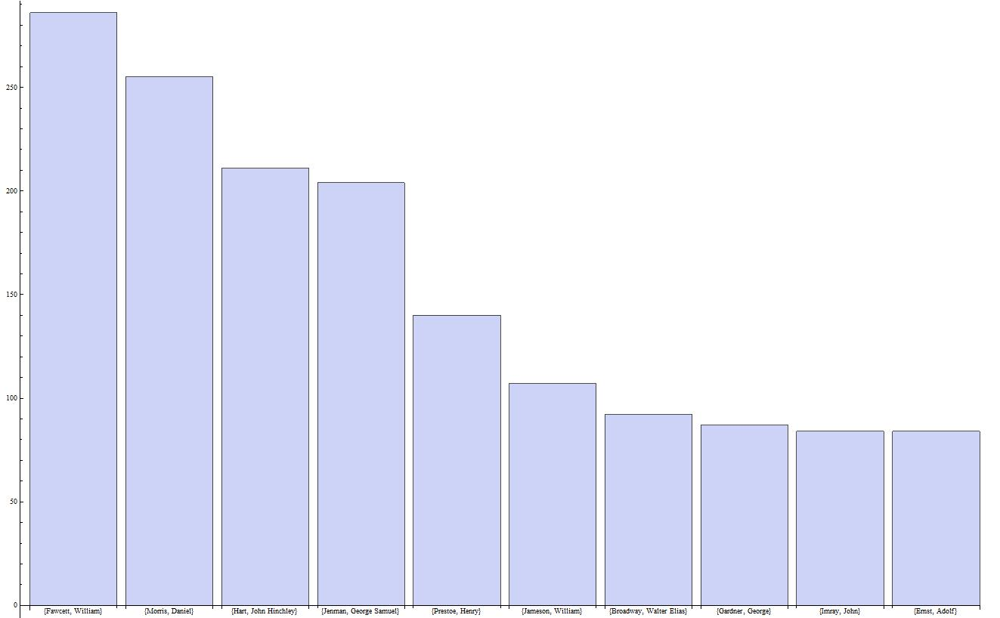
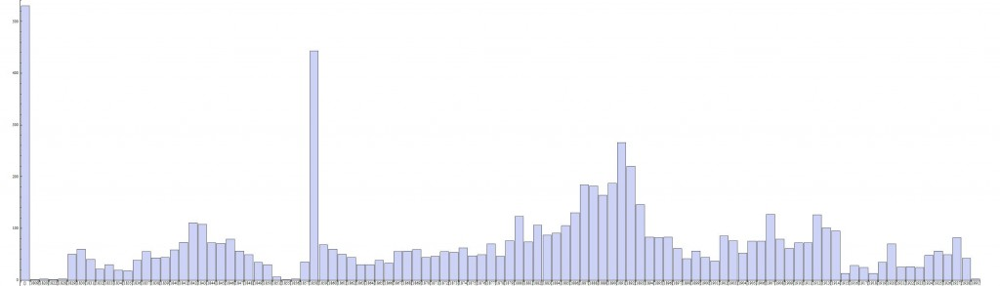

I've been informed that my original download missed a lot of the files. I'm going to recreated the two graphs below over the next few days with the missing data and rework this post.

I'm working with Bea Alex on a blog post for the Kew Garden Directors' Correspondence project. They shared their meta data collection with Trading Consequences and Bea reformatted it into a directory of 7438 xlm files (one for every letter digitized to date by the project). The metadata includes all the information found on the individual letter webpages (sample). Bea and the rest of the team in Edinburgh focused on extracting commodity-place relationships from the description field. We're currently working with the data for coffee, cinchona, rubber, and palm to create an animated GIS time-map for the blog post we are writing. However, because this is one of the smallest collections we are processing in the Trading Consequences project, I decided to try and play around with the data a little more.
XML files are pretty ubiquitous once you start working with large data sets. They are generally easier to read and more portable than standard relational databases and presumably have numerous other advantages. The syntax is familiar if you know HTML, but I've still found it challenging to learn how to pull information out of these files. As with most things, coding in Mathematica, instead of Python, makes it easier. It turned out to be relatively straight forward to import all 7438 xml files, have Mathmatica recognize the pattern of the "Creator" field and pull out a list of all of the letter authors. From there, it was easy to tally up the duplicates, sort them in order of frequency (borrowing a bit of code from Bill Turkel) and graph the top ten (of the 1689 total authors).
With a few small changes, I managed to produce a similar post showing the frequency of letters by year in this collection. Neither of these graphs answer profound historical questions (though I am now interested in learning more about the top letter writers). Nevertheless, the process of creating the graphs taught me the tools need to extract information from a large directory of XML files, a skill I can put to use in the future. It has also confirmed that I really like functional programming approach available in Mathematica. I managed to do all of this work without a single loop and for some reason I find this approach a lot easier to understand and troubleshoot. Moreover, I find it is pretty easy to build functional code form blocks of sample code in the Mathematica documentation, even when I don't totally understand how it works at first, which is a huge advantage when you are learning to program (then again, perhaps I'm subconsciously justifying the expense of this proprietary software).
[caption id="attachment_644" align="alignnone" width="645"]
Number of Letters by year. The first bar represents all of the letters with a missing date field. Click to make the image larger.[/caption]
Here is a basic overview of the code it took to make the top ten letter writer graph above:
These two steps creates a list of all of the files and the path to
the directory:
filenames = Import["D:\\Dropbox\\file"]
path = "D:\\Dropbox\\file\\"
This is a simple function to import the files:
importFile[x_] := Import[path <> filenames[[x]]]
The Table function proved to be very useful
as it repeated by Import over and over, placing
the content of the xml files all into one big list:
xmlFilesList = Table[importFile[x], {x, 1, 7438}];
Next I adapted code from a Mathematica XML tutorial to
extract the names of the authors:
namefind[x_] :=
Cases[Cases[x, XMLElement["attr", {"name" -> "author"}, _],
Infinity], XMLElement["attr", _, {name_}] -> name, 2]
authornames = Map[namefind, xmlfileslist];
tallyauthornames = Tally[authornames]
Code borrowed from Bill to sort based on the tally numbers:
sortedauthorlist = Sort[tallyletterauthors, #1[[2]] > #2[[2]] &];
Take[sortedauthorlist, 10];
BarChart[Apply[Labeled, Reverse[%88, 2], {1}]];
I expect there are better ways to do many of these processes, but this is what someone with very limited programming experience came up with in an afternoon.
{kind=link}
{kind=link}